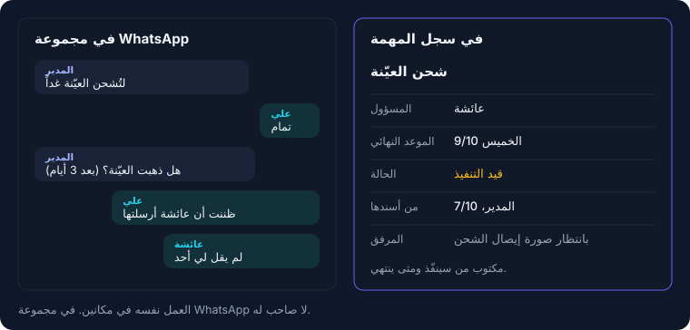
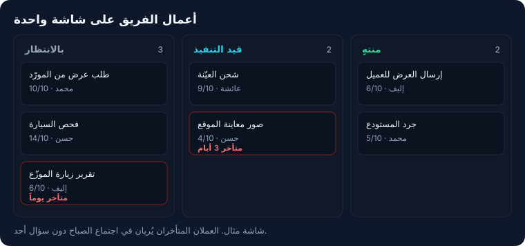

لماذا تبقى الأعمال بلا متابعة؟ ما فائدة برنامج إدارة المهام
معظم الأعمال في الشركة تُعطى شفهياً. تُقال في الممر، تُطلب على الهاتف، تُكتب في مجموعة WhatsApp. قسم منها يُنفَّذ، وقسم يُنسى، وقسم يُسأل عنه بعد ثلاثة أيام: «ماذا حصل بذلك العمل؟». هذا المقال يشرح لماذا تبقى الأعمال بلا متابعة وكيف يعالج برنامج إدارة المهام ذلك.

أين يضيع العمل؟
مجموعة WhatsApp تبدو عملية لإعطاء الأعمال لأن الجميع فيها. لكن مئة رسالة تصل إلى المجموعة في اليوم. رسالة الصباح «لنرسل تلك العيّنة بالشحن» تصبح عند الظهر بعيدة في أعلى الشاشة. وكل واحد من الثلاثة الذين رأوها يظن أن غيره يهتم بها.
وفي العمل الذي يُعطى شفهياً الوضع أكثر غموضاً. من أعطى العمل يتذكر أنه قاله. ومن استلمه لا يتذكر متى كان مطلوباً، أو لم يسمعه أصلاً. فينشأ نقاش كلا طرفيه محقّ، وبينما يدور الحديث عمّن قال ماذا يكون العمل ما زال غير منفَّذ.

ويحصل العكس أيضاً: ينفّذ شخصان العمل نفسه. يصل إلى العميل عرضا سعر مختلفان، ويُتَّصل بالمورّد مرتين. فتبدو الشركة لمن ينظر من الخارج شركة غير منظَّمة.
يوم المدير يمضي في الملاحقة
حين لا تكون الأعمال مكتوبة في مكان ما تبقى مهمة المتابعة على ذاكرة المدير. أول ما يفعله صباحاً أن يسأل كل واحد بمفرده: هل أُرسل عرض السعر؟ هل أُخذت السيارة إلى الفحص الفني؟ هل وصلت الصور من موقع العمل؟ وهكذا يمضي جزء مهم من اليوم.
ولهذا الوضع أثر جانبي آخر. حين ينسى المدير أن يسأل يُنسى العمل أيضاً. ومع الوقت يتعلّم الفريق أن العمل الذي لا يُسأل عنه ليس عاجلاً.
والفراغ نفسه يظهر حين يترك أحدهم العمل أو يأخذ إجازته السنوية. الأعمال التي عليه موجودة في هاتفه وذهنه فقط. من يحلّ محلّه يبدأ من الصفر، والوعود التي أُعطيت للعملاء تضيع في الأثناء.
ما الذي يغيّره برنامج إدارة المهام؟
ما يفعله بسيط: يحوّل كل عمل إلى سجل. وفي السجل أربعة أشياء: ما العمل، من سينفّذه، حتى متى، وما حالته الآن. حين تكون هذه المعلومات الأربع مكتوبة يزول معظم المشاكل المذكورة أعلاه من تلقاء نفسه.
من يستلم العمل يرى قائمته على هاتفه. واضح ما عليه أن يفعله اليوم وأيّ عمل تأخّر. حين ينهي العمل يؤشّر عليه ويضيف صورة أو مستنداً إن لزم.
ومن يعطي العمل لا يضطر إلى السؤال. يفتح الشاشة فيرى ماذا عند مَن، وما الذي انتهى، وما الذي تأخّر. اجتماع الصباح يقصر، ولا يُبحث فيه إلا في الأعمال المتعثّرة.

والأعمال المتكررة تدخل هنا أيضاً. الجرد الشهري، والزيارة الأسبوعية للموزّعين، وفحص السيارة، وتجديد العقد، تُعرَّف مرة واحدة ثم تنزل تلقائياً في قائمة الشخص المعني حين يحين موعدها. تذكُّرها لم يعد مهمة أحد.
للفرق التي تعمل في الميدان
في أعمال مثل الصيانة والتركيب والمبيعات الميدانية يقضي الفريق معظم يومه في الخارج. ولمعرفة كم نُفِّذ مساءً من الأعمال التي وُزّعت شفهياً في الصباح تنتظرون عودة الجميع.
حين تصل المهام إلى الهاتف يحمل الفريق الميداني معه العمل التالي والعنوان وملاحظة العميل. وعند الانتهاء يصوّر العمل ويأخذ توقيع العميل إن لزم. والمكتب يرى ذلك في اللحظة نفسها. وحين يتصل العميل تستطيعون أن تقولوا: «غادر فريقنا قبل نصف ساعة والعمل أُنجز».
هل يرى الفريق في ذلك رقابة؟
ردّ الفعل الأول يكون غالباً بهذا الاتجاه ويجب أخذه بجدّية. إذا استخدمتم النظام فقط لتروا من تأخّر، فسيجد الفريق سريعاً طريقة للتأشير والمضيّ.
المقاربة التي تنجح أن يسهّل النظام عمل الموظف أولاً. أن يرى أعماله في قائمة واحدة، وأن يتخلص من نقاش «لم يقل لي أحد»، وأن يسلّم أعماله بشكل مرتّب حين يأخذ إجازة، هذا مريح للموظف أيضاً. نحن في التركيبات نستهدف ذلك وحده في الأسبوع الأول. التقارير ومتابعة التأخير تأتي لاحقاً.
كيف تبدؤون؟
ابدؤوا بفريق واحد وقاعدة واحدة: العمل يُعتبر معطًى إذا كُتب في النظام. والعمل الذي قيل شفهياً أو كُتب في المجموعة يُدخَل إلى النظام بعد ذلك. إذا صمدت هذه القاعدة أسبوعين فالباقي سهل.
لا تنشغلوا في البداية بتفاصيل مثل الفئة والأولوية والوسم. العمل والشخص والتاريخ تكفي. وكلما اعتاد الفريق أضفتم الحقول التي تحتاجونها.
الخيارات كثيرة. هناك تطبيقات خفيفة تتابع المهام فقط، وهناك أنظمة تعمل مع سجلات العملاء وعروض الأسعار. إذا كانت مهامكم مرتبطة بعميل أو طلبية أو مشروع فعليكم النظر في النوع الثاني (انظر ما هي إدارة المهام في CRM؟). وإلا كتبتم المعلومة نفسها في مكانين.
أسئلة شائعة
هل يجب ترك WhatsApp نهائياً؟
لا. يمكنكم الاستمرار في استخدامه للمراسلة. الشيء الوحيد الذي يتغيّر أن العمل نفسه لا يبقى في الرسالة بل يُسجَّل.
ألا يكون ذلك كثيراً على شركة من عشرة أشخاص؟
عشرة أشخاص يعني ثلاثين أو أربعين عملاً مختلفاً في اليوم. لا يمكن أصلاً أن يحفظها شخص واحد كلها في ذهنه. وأداة بسيطة تكفي وزيادة لهذا الحجم.
ماذا لو لم يستخدمه الفريق؟
إذا لم يستخدمه المدير فلن يستخدمه الفريق. حين تُعطى الأعمال من النظام وتُتابَع حالتها من النظام تتكوّن العادة خلال أسابيع قليلة.
خدماتنا ذات الصلة: تطبيق إدارة المهام والفرق الميدانية، استشارات التحول الرقمي.
قالب متابعة المهام
من، أي عمل، وحتى متى؛ العمل المتأخر بالأحمر، وملخص لكل شخص. قالب Excel مجاني.
شاهد القوالب